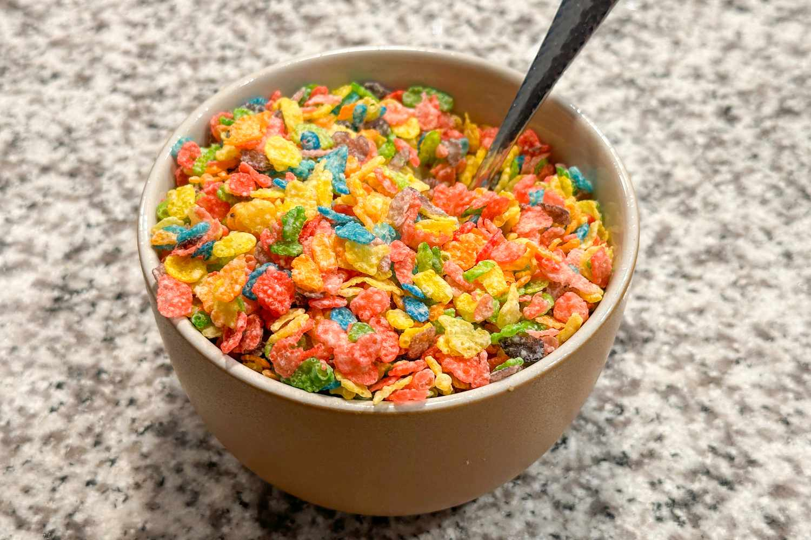

Cereal

A perfectly poured bowl of crispy cereal swimming in cold milk
The humble bowl of cereal is the ultimate baseline of human culinary effort. Requiring
absolutely zero cooking skills, electricity, or heat, it stands as the definitive solution for a breakfast or a
frantic midnight snack. Its brillience lies entirely in its efficency: you go from starving to eating in less than
thirty seconds flat.
While it may seem entirely mundane, every individual has their own strict philosophy regarding its preparation.
The timeless debate usually revolves around pouring mechanisms, optimal milk-to-cereal ratios, and the critical race
against time to consume the contents before the dreaded crisp-to-soggy transformation takes place
Ingredients:
- 1 cup of your favourite breakfast cereal
- 1/2 cup of cold milk (dairy or plant-based)
- Optional: 1 sliced banana or a handful of berries if you're feeling fancy
Directions:
- Retrieve a clean, dry ceramic bowl from the cupboard.
- Pour your desired amount of cereal directly into the bottom of the bowl.
- Carefully pour the cold milk over the top of the cereal until it reaches your preferred level of submeregence.
- Locate a clean spoon.
- Sit down and consume immediately before the texture turns into mush.
- Drink the leftover milk directly from the bowl like a champion.
- Enjoy your delicious bowl of cereal!
Home